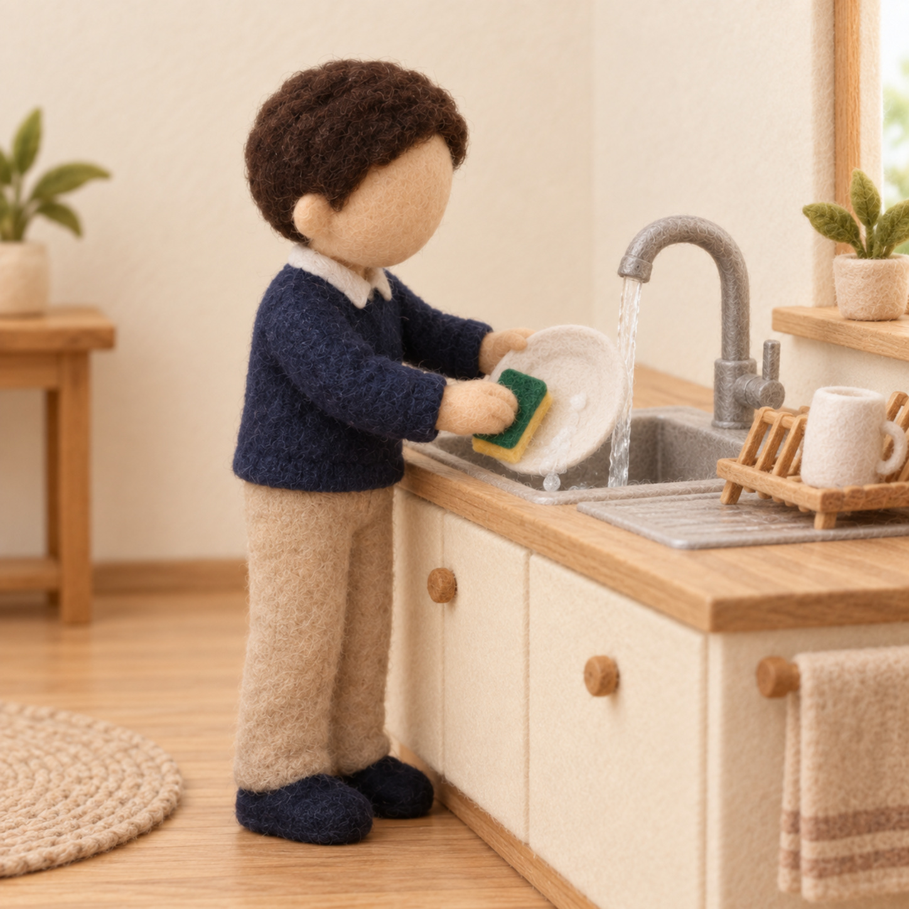
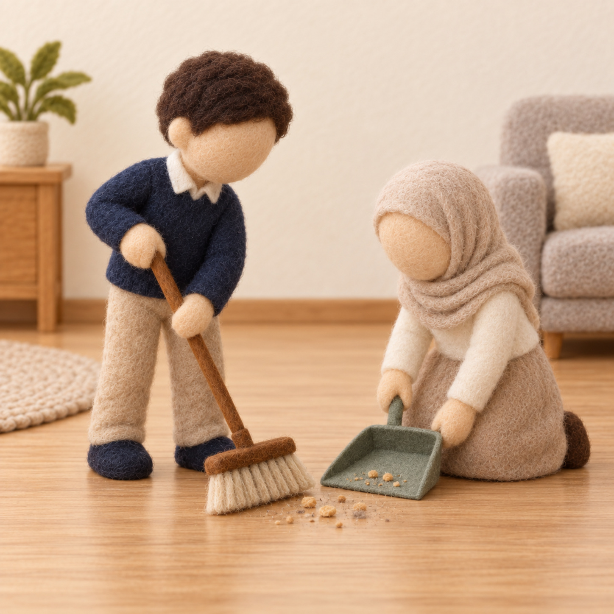
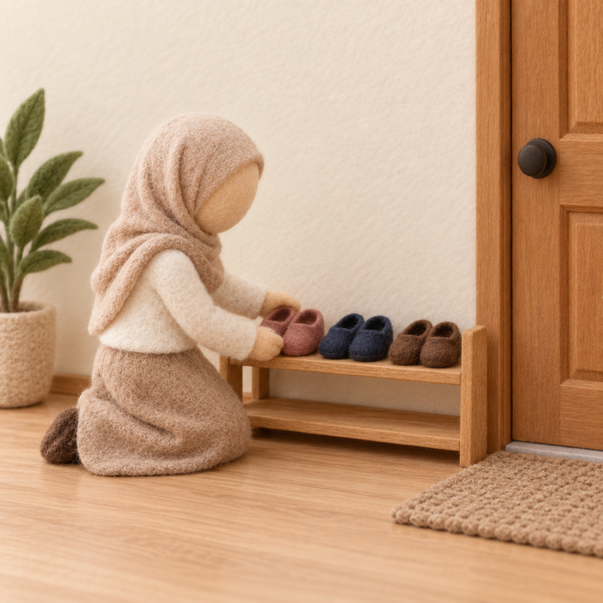

أدوارُ التعاون في بيتي
وحدة المسكن · كتابي المنير · سورة الإنفطار — الدرس الثالث · الإنفطار (١٧–١٩) · ركن المسكن
طريقة العمل: اقصصي بطاقاتِ الأدوار ووزّعيها على الأطفال بوصفهم «أهلَ بيتٍ واحد». يختار كلُّ طفلٍ بطاقةً وينفّذ دورَه بالتعاون داخل ركن المسكن (ترتيبٌ، إعدادُ مائدةٍ، تنظيفٌ…)، ثم نتحدّث: أهلي يعينونني وأُعينهم، والفضلُ كلُّه لله.
بطاقاتُ الأدوار — تُقصّ وتُوزَّع
 صورة: ترتيب السرير
صورة: ترتيب السريرترتيبُ السرير
أرتّب فراشي
 صورة: إعداد المائدة
صورة: إعداد المائدةإعدادُ المائدة
أُجهّز الصحون

صورة: غسل الأطباقغسلُ الأطباق
أُنظّفها بالماء
 صورة: طيّ الملابس
صورة: طيّ الملابسطيُّ الملابس
أطوي وأرتّب

صورة: كنس الأرضكنسُ الأرض
أُنظّف المكان
 صورة: سقي النبات
صورة: سقي النباتسقيُ النبات
أسقي الزرع
 صورة: ترتيب الكتب
صورة: ترتيب الكتبترتيبُ الكتب
أُعيدها للرفّ
 صورة: إخراج النفايات
صورة: إخراج النفاياتإخراجُ النفايات
أرمي في مكانها

صورة: ترتيب الأحذيةترتيبُ الأحذية
أصفّها عند الباب
الخلاصة: أنعم اللهُ علينا بأهلٍ يعينوننا، ونعينهم بالتعاون على الخير، والأمرُ كلُّه لله يوم الدين. — للمعلمة: نشاطٌ تطبيقيٌّ بعد الدرس لمجموعةٍ صغيرة (٤–٦)، وثّقي استقلال الطفل دون تحويله إلى اختبار.
دليل معلمة غرس القيم · نشاط تطبيقي — ركن المسكن